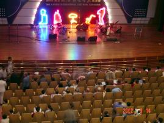
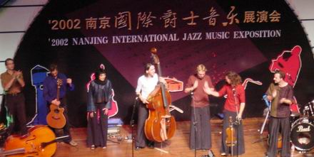

Archives : 2002-09
寂寞咖啡之九月的秋天 @ Sep 30, 2002
要放假了,写点什么吧,随便写点什么吧...
金陵饭店在江宁的百家湖开了一家分店，那天公司聚餐，我居然忘记带数码相机，没有想到那里的湖会那么美，想着以后还会去吗？没有兴致唱卡拉OK，和几个年轻的同事疯玩秋千和翘翘板，给那次活动留下了许多欢笑的记忆。
一周前痛苦的生病中... ...
《I Believe (With Piano)》  —把这首钢琴曲送给我自己。
—把这首钢琴曲送给我自己。
上周在南京新开的一家以侏罗纪公园为主题的“恐龙餐厅”用餐，无论如何吃饭就是相聚总让人期盼和喜悦。
珠江路上的行人没有节假日多，那些贩卖盗版光盘的小商贩依然在人行道上叫卖，商家的促销活动在铺着红色地毯的展示台上进行。SONY专卖店里的东西就是比国外的价格高。《模拟人生》出了两张新的资料光盘《燃情约会》和《我在休假》，予我是一个惊喜。
夫子庙幸福眩目的阳光消融着体内的郁闷，那是一个充满梦幻和温馨的午后！我闲步在夫子庙的东市和西市两条纵深的小巷中，小径上写满对未来的憧憬和等待！
年轻的新同事9月间买了50万的新房子...BESS买了法国雷诺车，今天开到公司来的，告诉我已经被她弄得很脏。
财务的那个帅GG被提了副经理，想着最实惠的是奖金系数要增加了。祝贺他！
莎利文的简餐口味很不错，下次还想去......
9月29日的早上，我家附近上演着辅警和卖菜小贩猫捉老鼠的戏剧，卖黄瓜的小贩一边逃跑一边还吆喝“黄瓜5毛钱一斤，要不要？”也算在40分钟的等待中看见一幕有趣生活的场景，我该怎么描述这个早晨的心情呢？... ...
《I will always love you》
九月的秋天...有美丽的阳光...
Emblem of Asian Games @ Sep 30, 2002
亚运会历届会徽展示：

我的乡愁在哪里？ @ Sep 27, 2002
我们只会在心里离别或者留守在某个人，某段时期或者是某个地方，真正的离别在心里，若离别了我只会朝前看，过去已过去。
我没有乡愁的概念，我也不知道哪里应该算是我的故乡，我出生、成长和工作的地方均不同，我父亲的家乡虽然离南京很近我却从来没有去过，我没有见过我的爷爷奶奶，据说那里有我们这个家族的很大一个祠堂，我不知道父亲的家乡究竟是怎样的，这或许是父母有意的失误？
28年中走过4、5个城市。还记得小时侯大家流行用自己的名字算命，我的命里说我的好运在北方，而我现在却生活在没有好运的方位上。是否有一个地方让我可以留恋？总有过客的感觉存在，有时候坐在汽车上看着车窗外的景物和人群，我在想我下一个生活的地方在哪里？我还会在这里停留多久？终究过不了好日子，喜欢折腾自己所以喜欢上远行，如果可以，最好把我的忧伤从这个城市中带走，带到其他地方，让它在旅途中飘散，再也找不到回来的路。
2002南京国际爵士音乐展演会(2002.9.14.) @ Sep 15, 2002
昨晚法国的德拉桑（CATHERINE DELASALLE）爵士乐队和比利时Troissoeur爵士乐队在南京的艺术中心进行这次展演会首场演出。我们的票属于最便宜的50元一张,坐在二楼的第二排,里面的设施远比艺术中心的外观要优良的多，当然也超出了我的想象！去年或者是前年我在南京艺术学院的音乐厅观看过全国院校民族歌手比赛，那是我认为我感受过的除了北京的民族剧院之后设施最好的剧院，其实南艺的音乐厅应该是纯为音乐和声乐表演建造的。听那次的民族歌手的演唱，我尽然对民歌有了前所未有的好感，歌手在舞台上表演一律不用麦克风，歌词有电子屏幕一句句的显示出来。音乐厅内非常安静，可以感觉得到歌手的声音通过厅内特别设计的全木质构造墙壁给观众带来的美妙感受。南京艺术中心也是一样的雷同于南艺音乐厅的构造设计，我想如果我不心疼口袋里的银子，选择一楼前10排左右的位置上，或许可以更好的感受到演出的效果。不过那要等我真的具备了鉴赏音乐的耳朵和水平之后，而目前我完全是从艺术熏陶方面去参加这类活动的。
第一个演出的是法国CATHERINE DELASALLE乐队，这个乐队融合了爵士、法国民间音乐和吉普赛音乐。之后上场的Troissoeur是比利时的国际性乐队。他们的表演热情、感人。该乐队所有的音乐都是他们自己创作的，音乐轻快、富有节奏感、充满活力，表演具有国际水平。多元文化的外在影响（如东方的灵感、巴尔干山脉的音乐、爱尔兰、法国等等）成为了Troissoeur乐队的本质特性。他们的音乐介存于民间音乐和虚幻（自己创作的包含不同的风格）之间。还有一点也是非常引人注意的“直觉是他们创作的主要基础。他们赋予听众以后总完全自主自由的解释。至今为止，该乐队已举行了160场音乐会，还曾在著名的民间音乐节-布鲁日节的国际舞台上表演过。
就我个人欣赏的水平而言，我更喜欢比利时乐队的演奏风格，起初的乐曲有很浓的爱尔兰音乐的特点，让人联想到山谷、草原、流水以及奔跑的马群，自由、粗犷大气但又不失细腻。乐队成员以他们鬼魅怪异且富有浓郁民族特点的琴声、嗓音以及形体表现出的效果使我毛孔扩张浑身发麻，并沁入人魂魄的感觉！
这次南京国际爵士音乐展演会有德国THEOJORGENSMANN QUARTET和、法国CATHERINE DELASALLE、比利时TROISSOEUR、加拿大和韩国的TAEJEON参加，活动将进行到下周三结束。

—从二楼拍摄到的舞台及观众席

—法国和比利时乐队合奏最后一曲

—此次参加展演会的外国乐队人员